Making interactive maps
Introducing Mapbox Studio
Mapbox Studio is a web-based mapping application that makes it easy to produce elegantly styled, interactive, online maps.
The data we will use today
Download the data from this session from here, unzip the folder and place it on your desktop. It contains the following files:
seismic.zipZipped shapefile with data on the risk of a damaging earthquake in 2018 for the continental United States, from the U.S. Geological Survey.quakes.csvThis file isn’t in the folder. As for week 10, we will use the U.S. Geological Survey’s Earthquakes Archives API where we will search for all earthquakes since 1960 with a magnitude of 6 or greater that occured witin 6,000 kilometers of the geographic center of the contiguous United States. Type this url into the address bar of your browser:https://earthquake.usgs.gov/fdsnws/event/1/query?starttime=1960-01-01T00:00:00&latitude=39.828175&longitude=-98.5795&maxradiuskm=6000&minmagnitude=6&format=csv&orderby=timequery.csvshould download. Rename itquakes.csvand add to theweek11folder.world.zipZipped shapefile including the variablegdp_percap, giving World Bank data from 2017 on Gross Domestic Product (GDP) per capita for the world’s nations, in current international dollars, corrected for purchasing power in different territories.template.htmlA web page with a basic template for displaying a map made with Mapbox Studio using the Mapbox GL JavaScript library.
Map seismic risk and earthquakes for the continental United States
Select a basemap
Sign in to your Mapbox account, then click on navigate to Mapbox Studio:
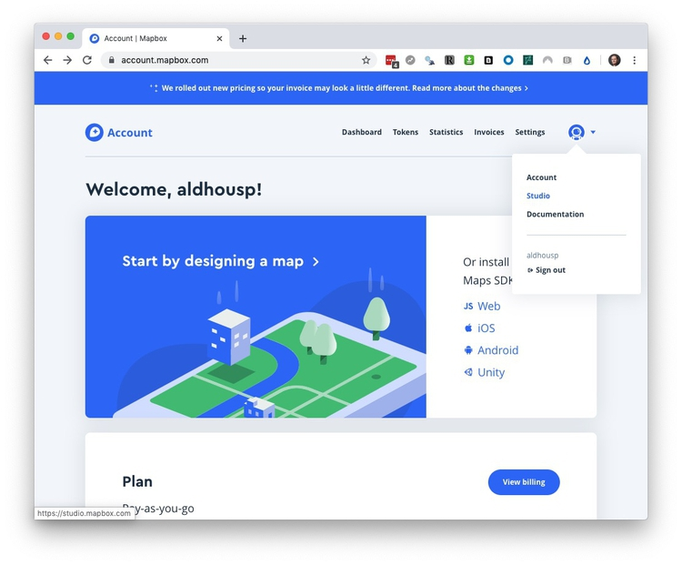
You should now see the following screen:
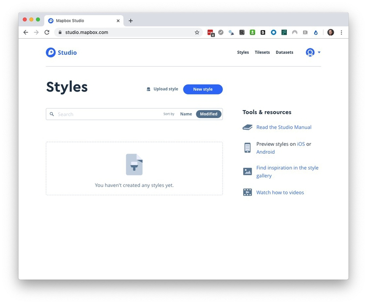
Each new map in Mapbox is a Style. Click on New style, and then select a basemap. The suggested Basic template is rather busy for a map with data layers, so scroll down, select the Light template and click Customize Light.

You should now see a screen like this (You can close the Welcome to Studio and subsequent pop-ups):
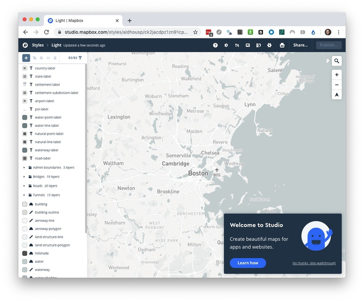
Edit the name of the Style from Light to Seismic at top left, and zoom the map out to the continental United States:
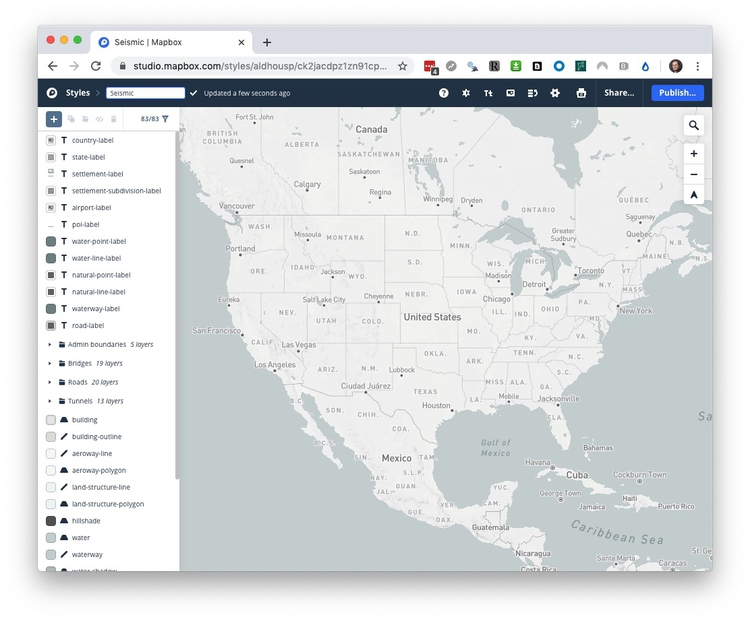
You can, if you wish, edit the colors, fonts, etc used for features and labels on your basemap by clicking on them in the panel at left.
Add and style the seismic risk layer
Click + at top left and then + Upload in the New layer panel:
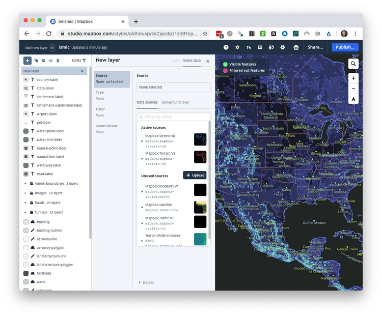
This pop-up shoudl appear:
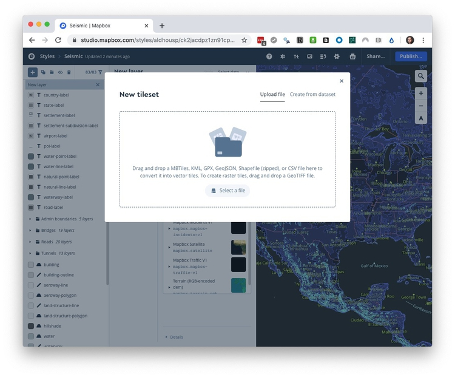
Drag and drop the seismic.zip zipped shapefile, or click Select a file and navigate to it, then click Confirm.
Once the file uploads, select it as the new layer by clicking on its polygon icon (highlighted in gray here) from your Unused sources:
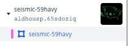
(If the uploaded layer doesn’t appear after processing, refresh the web page, and click + at top left again.)
Your screen should now look like this:
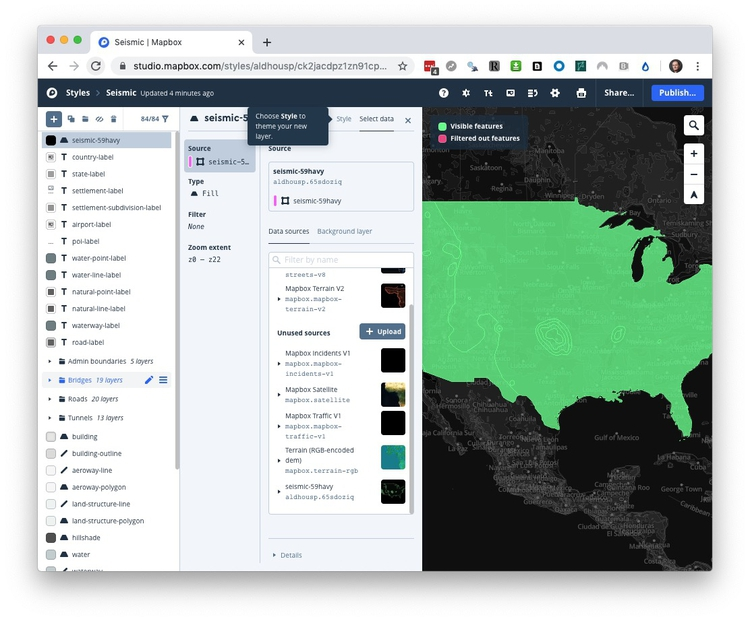
Click on the Style link at top. You can also get to the Style panel for any layer by clicking on it in the panel at left.
Click on Style with data conditions under Fill color. Select the ValueRange variable as the Data field, set the condition as is equal to <1, and set the HEX color value to #fee5d9 from the ColorBrewer Reds palette with five data classes.
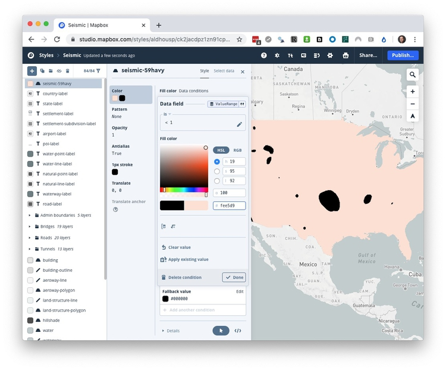
Click ✔ Done, then + Add another condition and repeat the process for the other bins in the data, filling with the apppropriate color from the palette, until the map looks like this:
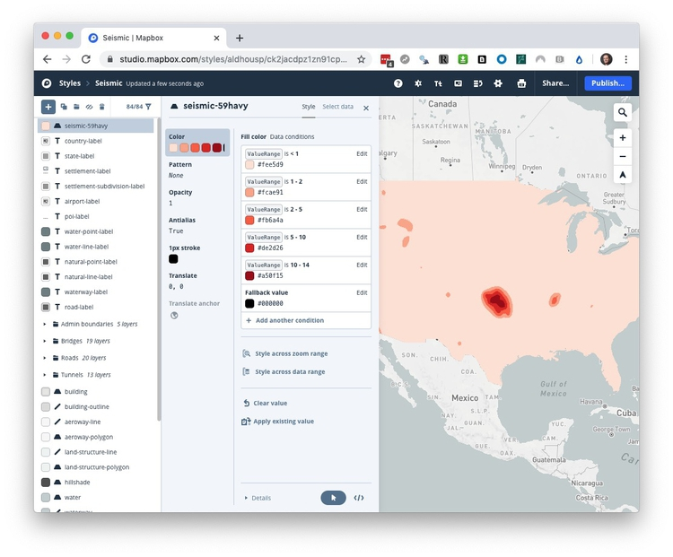
Set the Opacity>Fill opacity to 0.8:
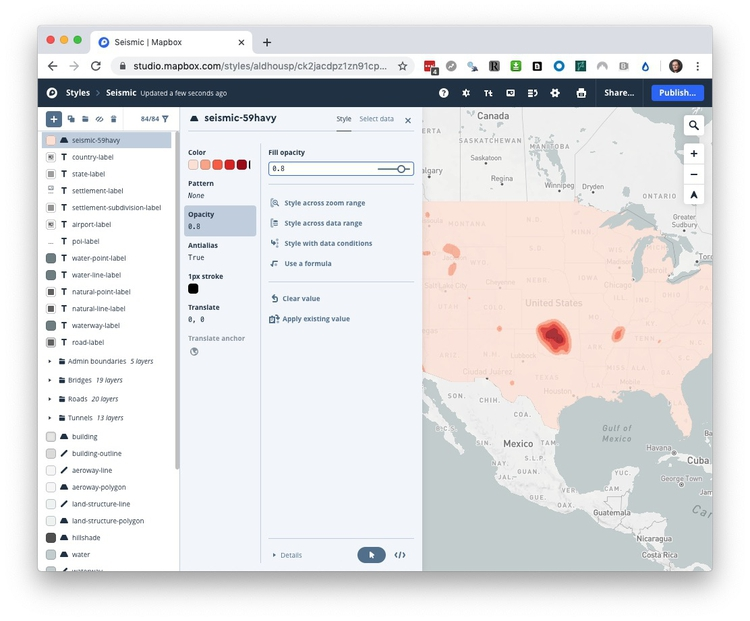
Finally, drag the seismic layer beneath the layers marked label so that they appear above the data layer. Close the Style panel and the map should now look like this:
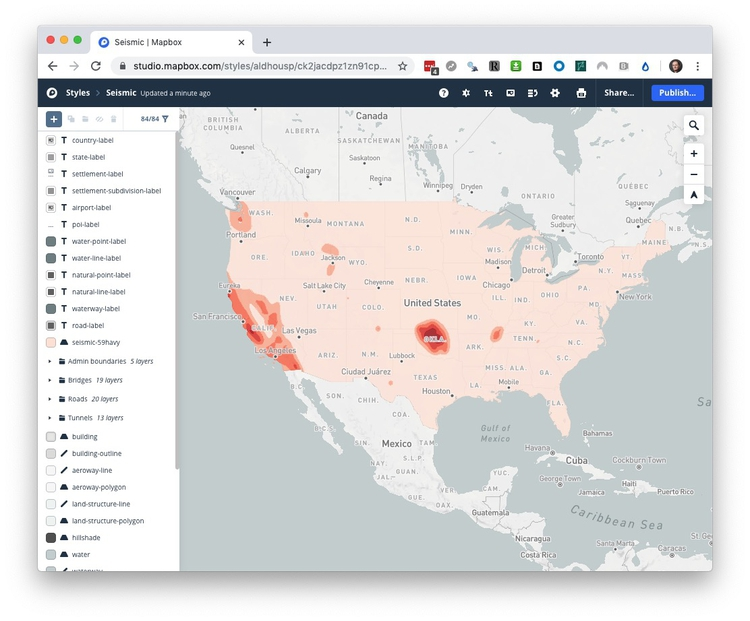
Add and style the earthquakes layer
Add the quakes layer, following the same process as before for the files quakes.csv. Click on the new layer in the panel at left and the map should look like this:
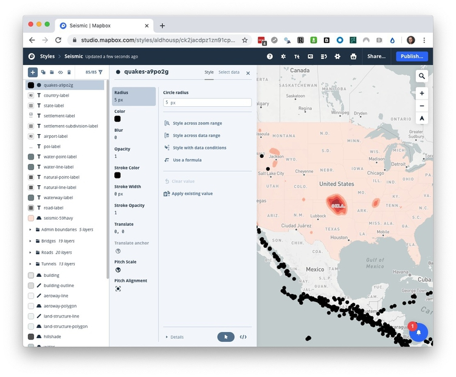
Remember from week 10 that we need to use a formula to convert the mag values for earthquake magnitude into the amount of shaking each caused. So with Radius highighted, click Use a formula and fill in as follows:
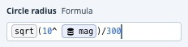
10^mag is the same formula as we used last week, but when designing a web map, we can’t set the area of circles, only their radius. So we also need to take the sqrt or square root of these values, so that the circles size by area correctly with the data. (Look back to the notes from Week 2 if you can’t remember why.) The division by 300 is just a scaling factor for all of the circles, set by trial-and-error for optimal display on the map.
Now set the Color to white (HEX value #ffffff), the Opacity to 0.5, and the Stroke Width to 0.1 px.
Close the Style panel and the finished map should look like this:
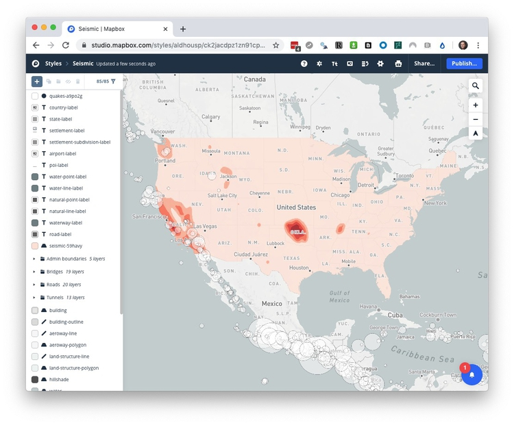
Publish map and make a web page to display it
Click on the blue Publish button at top right, and click Publish again at the next window:
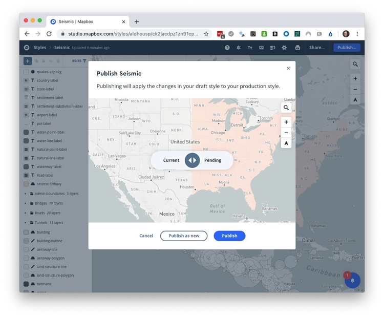
Click Share at top right, and copy Your style URL and Your access token
Make a copy of template.html and rename it as seismic.html.
With the file seismic.html open in Sublime Text or Brackets, edit the <title></title>, and the center position for the map as follows, and add your access token and style URL in place of the placeholders:
<!DOCTYPE html>
<html>
<head>
<meta charset='utf-8' />
<title>Seismic risk and quakes</title>
<meta name='viewport' content='initial-scale=1,maximum-scale=1,user-scalable=no' />
<script src='https://api.tiles.mapbox.com/mapbox-gl-js/v1.4.1/mapbox-gl.js'></script>
<link href='https://api.tiles.mapbox.com/mapbox-gl-js/v1.4.1/mapbox-gl.css' rel='stylesheet' />
<style>
body { margin:0; padding:0; }
#map { position:absolute; top:0; bottom:0; width:100%; }
</style>
</head>
<body>
<div id='map'></div>
<script>
mapboxgl.accessToken = 'pk.eyJ1IjoiYWxkaG91c3AiLCJhIjoiY2pueHpmeGNxMGhxNjNxbXhpMzViNGUyZSJ9.FQiJVij9bPb65b2jTDtBGA';
const map = new mapboxgl.Map({
container: 'map',
style: 'mapbox://styles/aldhousp/ck2jacdpz1zn91cpazrebios6',
center: [-97, 40],
zoom: 3.0
});
</script>
</body>
</html>
Now, above the closing tag, add the following code:
// Add zoom and rotation controls to the map.
map.addControl(new mapboxgl.NavigationControl());
// Disable scroll zooming
map.scrollZoom.disable();
To add a legend, immediately beneath add the following:
// Create legend
map.on('load', function() {
var layers = ['<1%', '1-2%', '2-5%', '5-10%', '10-14%'];
var colors = ['#fee5d9','#fcae91','#fb6a4a','#de2d26','#a50f15'];
for (i = 0; i < layers.length; i++) {
var layer = layers[i];
var color = colors[i];
var item = document.createElement('div');
var key = document.createElement('span');
key.className = 'legend-key';
key.style.backgroundColor = color;
var value = document.createElement('span');
value.innerHTML = layer;
item.appendChild(key);
item.appendChild(value);
legend.appendChild(item);
}
});
Then add this HTML immediately beneath <div id='map'></div>:
<div class='map-overlay' id='legend'></div>
To style the legend, add the following CSS code above the closing </style> tag:
.map-overlay {
position: absolute;
bottom: 0;
right: 0;
background: rgba(255, 255, 255, 0.8);
margin-right: 20px;
font-family: Arial, sans-serif;
overflow: auto;
border-radius: 3px;
}
#legend {
padding: 10px;
box-shadow: 0 1px 2px rgba(0, 0, 0, 0.1);
line-height: 18px;
margin-bottom: 40px;
}
.legend-key {
display: inline-block;
border-radius: 20%;
width: 10px;
height: 10px;
margin-right: 5px;
}
Finally, to add a pop-up to get information on each quake when clicked or tapped, add this above the closing </script> tag. You will need to use the name of your quakes layer from Mapbox Studio:
// Add popup
map.on('click', function(e) {
var features = map.queryRenderedFeatures(e.point, {
layers: ['quakes-36p62q'] // name of the quakes layer from your map
});
if (!features.length) {
return;
}
var feature = features[0];
var popup = new mapboxgl.Popup({ offset: [0, -15] })
.setLngLat(feature.geometry.coordinates)
.setHTML('<b>Magitude: </b>' + feature.properties.mag + '<br><b>Time: </b>' + feature.properties.time + '<br><b>Depth: </b>' + feature.properties.depth + ' km')
.setLngLat(feature.geometry.coordinates)
.addTo(map);
});
The code in the setHTML function writes the HTML to appear in the pop-up. It pulls data for each quake using the format: feature.properties.variablename.
The finished map should look like this:
This web page can now be embedded in any other web page, as I have done here, with a simple iframe of the following form:
<iframe src="seismic.html"> width="100%" height="500" frameborder="0" marginheight="0" marginwidth="0"></iframe>
Exercise: Map GDP per capita in 2017 for the world’s nations
Return to the main Mapbox Studio page and select a Light basemap as before. Rename the Style as GDPpercap, and upload and add the world.zip zipped shapefile as a new layer.
Style it to mimic the approach used in the map below, from Week 1:
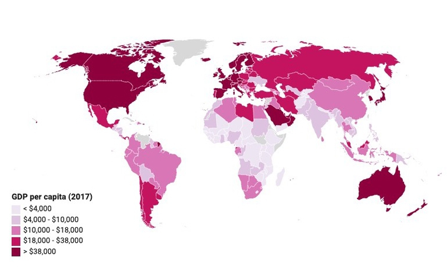
You will have to use Style with data conditions. Because the variable gdp_percap has decimal numbers, you will need to include a decimal point in the numbers you select for the breaks for the bins.
Make a web page to display the map.
Assignment
File a full project update via your GitHub account, so that I can see your visualizations, data etc. Make sure that your GitHub repo is up to date with data, charts etc, so that I can sync with my version of your project and review your progress.
This should include a summary in Markdown. Explain:
- What you have done.
- What you intend to do.
- Any problems, obstacles, you are experiencing. Pay particular attention to this, so that we can work on solutions when we meet next week.
Share this with me by 6pm on Wed Nov 13.